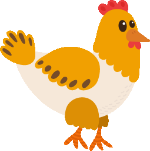
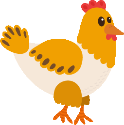
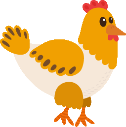
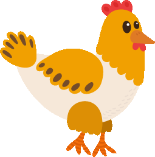

 



요즘 한국에서 진행중인 논의들 중 반려동물의료비, 대체육, 동물원을 살펴볼까 하는데 어때?
오 그게 뭐야?
그나저나 강아지,고양이 새 친구들도 와있었네~ 반가워! 근데 대체육은 뭐야? 고기를 대체하는 고기(?)라는 뜻..?
최근 동물원에 대한 논의도 뜨겁다고 알고 있어. 사람원이라는 곳은 없잖아.. 인간을 위해 동물들을 가두고 구경하는 것이 윤리적으로 옳은 걸까?